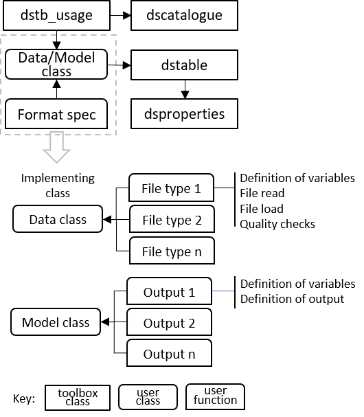

dstoolbox
dstoolbox is a collection of classes used to store and manage access to multi-dimensional data sets.
Contents
Licence
The code is provided as Open Source code (issued under a BSD 3-clause License).
Requirements
dstoolbox is written in Matlab™ and requires v2016b, or later. The toolbox is designed as an alternative to a Matlab™ table but is also an integral component of the muitoolbox.
dstoolbox classes
The classes in the toolbox include:
- dstable, holds a collection of one or more datasets with one or more common dimension vectors and the associated metadata.
- dsproperties, defines the object used to assign metadata to a dstable.
- dscatalogue, manages a catalogue of data sets that handle a collection of data sets (e.g. imported and model data), which are loaded into dstables and catalogued using dscatalogue.
Note: links to dstoolbox classes, in the text, display the class 'help'. Use the links on the dstoolbox sidebar menu to access the class documentation.
Schematic
These classes can be used together as illustrated in the following figure:

Usage
The toolbox is designed to store and manage multi-dimensional data sets, including meta-data of the variables and all dimensions and manage access to a collection of classes that hold data sets using a catalogue. In the schematic outline dstb_usage is a class to illustrate how dstable, dsproperties and dscatalgue are used. Data are loaded into a dstable with relevant metadata added to the table and made accessibile using dsproperties. Each time a class adds data a record is added using dscatalogue. The 'Format Spec' user functions, shown in the upper part of the figure, are implemented with functions, indicated by 'File Type' and 'Output Type', shown in the lower part of the figure. These define the meta-data of the data set being saved (and any input parameters, or details needed to read and load data from a file, depending on the application).
See Also
Some slides providing an introduction to the use of the dstoolbox can be found here. In addition, the dstoolbox is used in the muitoolbox and the use of both toolboxes is illustrated in the ModelUI App.